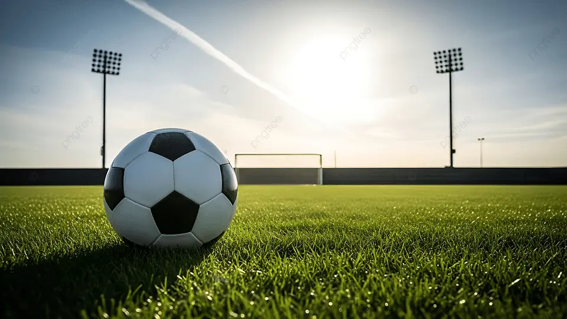

Was ich in meiner Freizeit mache
In meiner Freizeit halte ich mich gerne sportlich fit und probiere neue Dinge aus. Besonders viel Spaß macht es mir, Fußball zu spielen oder neue Gerichte zu kochen. Gleichzeitig finde ich es spannend, neue Sprachen zu lernen.
- Fußball spielen
- Kochen und neue Rezepte ausprobieren
- Neue Sprachen lernen
